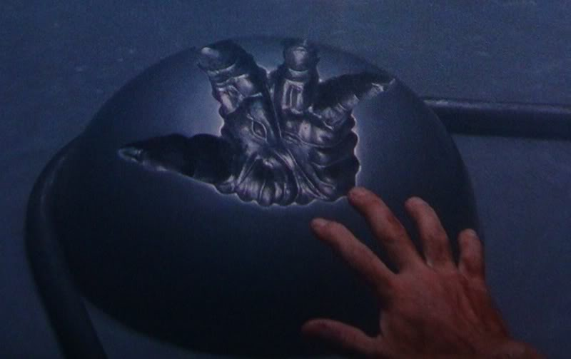

In case you are receiving this email from someone else, there is a series of Star Wars related messages I'd like to light up for you... OK so, it's a quickening, if you've seen Highlander--that's what I'm doing for you... quickening our ascent to "closer to utopia," and like, you'll thank me later. Today's lesson is about where we really are, and where I think we should go; since you don't want to chime in, I'll give you some options that I think seem viable--and explain what today's problem really is.So I wrote this little blurb a few weeks ago and decided not to send it. Since this email is particularly ... angry, I've decided to include it here, first. I'm sorry I'm "such a meanie," I just don't know what else to do. So I'm feeling a little sorry for you lately, I think I probably look angrier at you than I really am--and I want to ensure you that I am not mad at you at all. I am however, very ... concerned with the state of the American press which is not my weapon- -but humanity's true check on "governmental" tyranny--the kind of thing that we cannot afford to lose. So that being said, the vast majority of the people on this list do work for the press, and though I would be a liar not to say I needed you to light my fire, rest assured that I have gone well beyond this list of 2,345 points of light and there is a huge number of reporters and writers all over the world that have seen the light of the Son--without the benefit ( or is it a detriment) of knowing my personality better. Of course, with the understanding that journalistic integrity is just as important as what I see as an almost Holy impetus to disclose something this important to the general public.
Before we get there I have to comment a little bit about yesterday's email, because this is how we change the world, together. What I said to you, about my jail experiences made me decide to email a few people in the public defenders office here in Broward, as well as a local police ... what are they called... I guess one of the cities police forces. The Sheriff's office runs the jail there, but they don't have a public e-mail address--and I asked them to get the message to the Sheriff... that the conditions and procedures surrounding food service and court delivery are nothing short of torture. It's been a long time, and this is a new guy in charge--but like everything else "everything basically stays the same."  So right here, I'm letting you know that if you are uninterested in my rant about how horrible our prison and justice system is.. I think you really, really suck. I still want you to read about the "nature of reality," though, because despite what you may think in your silent and non-communicative heads, I am really here to ensure that our civilization survives and thrives. So, if you don't want to help change our Hell into Heaven, skip to the big bold letters "YOU ARE IN HELL."
Of my experience in jails around the country, which is plentiful, I can assure the entire world that the BSO Jail's food service is in the bottom 1%. I told these people (maybe you too?) that it gives " Green Eggs and Ham" its... oh right, I told you already. Hi, I really am Samael 2... like the book says.
It's important, but more important is that in the place where I grew up, nearly everything sucks... a lot. I told them "I'm being followed by a moon shadow" and believe that the things here are worse than everywhere else... because of me, He's done it on purpose because it's how he changes the world--showing us all in "caricature" what is happening everywhere. Specifically, I discussed the loss of a number of constitutional rights that have been ignored or affirmed by higher courts and even the Supreme Court of our state: 1) denying bail to second time arrests ... for no legal reason at all 2) a court-transfer system that is nothing short of torture. I told them ... that much, but the details really shine some light on the problem.. defendants are woken at 12pm to tell them they have to go to court after breakfast, then at 2am they are woken again... for medicine, at 4 am everyone is woken for breakfast (which is pretty retarded in itself) and then the court transfer .... which takes about 5 hours starts at 5am. You have every single incarcerated defendant going to take a plea bargain, stand for trial.... whatever... doing so on practically no sleep by design. It's intentionally designed sleep deprivation. Judges, by the way, are required to ask defendants if they are "of sound mind" when taking a plea, and they should all HEAR ME NOW, NOT ONE OF THEM IS, HAS EVER BEEN, AND NEITHER ARE THE JUDGES. (psst, neither are you.)
Here's the added text that Washington saw, with some annotations in italics:
I wanted to drop you a note and tell you why I feel the way I do... I realize you probably think that you "do better" for both the state and the defendants with the plea bargaining system that I see as such a problem. You might, but it's still not the how the system was designed to work--so it is breaking it.
I believe that once you have offered a deal to someone, the system has now tried to coerce them into not asserting their rights to a fair trial--it removes the fairness completely with a threat... if you don't do this.. and you assert your "right" you are going to get f-ed. I know I'm right, through my life this plea bargaining and point system has added up through basically the smallest possible crimes possible to make me face significant prison time for.. the smallest of infractions. We aren't helping the world by incarcerating everyone--or by "corrupting" (it's really what it is) the Constitutionally laid out system that is supposed to be the Supreme Law. I could tell you how I would fix it, but I'm sure we don't really care about my suggestions--in he meantime my complaints are booming to the sky... and I can't stop doing that. All three branches of government systematically and intentionally violate the Constitution of the United States in regard to the justice system regularly... that is rogue behavior--it doesn't matter how you look at it.
Hi, God gave you something, it was called freedom, and you are destroying it. We're not happy.
Same lines, the now almost ubiquitous (at least here, right?) practice of not offering bail to people already out on bail is absolutely unconstitutional. I don't care if Judges have affirmed it, or the DCA or the Supreme Court of Florida it needs to go to the highest court--it is disgusting.
The food in the BSO Jail is absolutely the worst in America. The commissary is almost the worst--and to be honest, the practice of starving people so they have to buy potato chips and then lining the pockets of who-knows-who ... is torture and profiteering from torture. It needs to be fixed.
So listen, before I work on ending world hunger, I'm going to work on destroying forced starvation, and whatever it is that is causing it. Right now, take heed, the worlds biggest problem is apathy--yours.
The Jail transfer procedures for court are torture, it is sleep deprivation, and it's disgusting. You could fix it with the snap of your fingers by trying to send inmates only to afternoon court. I don't understand how anyone thinks this shit is OK?
Please think to yourself who is more in the wrong, a drug user who is a victim of the largest narcotics dealer in the world--that's America by the way, or the court system that tortures them because they can't deal with the number of victims we have here.
Anyway, this whole thing is supposed to change the world--if we start doing that here, we're like... the beginning of a renaissance. It's the kind of thing that gives you immortality, really. Zion is not a place.. it's a point in spacetime---where everything stops spirally down. It follows me around.
Happy New Year, to all, God bless... Am... Amer... uh. everyone, really everyone.
Just a concerned citizen.
Anyway, the long and the sort of it is someone convinced me to send both the message you got (about my "highlighted life" and the private message to the local officials of the court... to most of the Congress of the United States. It's obviously not the first time I've spoken to them, but I mean... it's way safer to harass you than them. I have commented a bit on their response to the " You and I verse" message, as well as the " Sign of the Son" which they all definitely got inboxed.
To the point, we need to start making this world a better place, or we are moving the exit of our door to Heaven to Hell; Seriously, this is it--you are sitting around waiting for nothing, because that's what you'll get if you continue to allow this world's Downward Spiral to continue.
I imagine some of you are expecting something to come and fix your home for you--wake up, there's no way to do that. Others might be happy with your personal lives, and oblivious to what is really going on around you--to the needless pain and suffering of ... a vast majority of the planet. That's not going to work out well--it takes a fraction of a second to make this world a better place... and almost every single one of you has that power practically at your fingertips. Press the button.
So that' the other sign of the son... and the Darkness is why. Most people associate it with the sign of the devil--and it's really a representation of the father and son not being... united in desire. For a long, long time he would show me two hands, with both pointer fingers up... and spread them just about as far a his arms would reach. Nice guy, right? :) Anyway, it's probably the source of the idiom, "keep your fingers crossed." YOU ARE IN HELL
So here's what I think is going on. A long sometime ago God decided he was going to try and print Hell into reality, you know... to reseed the place that didn't survive on its own with life. That's what this place is, it's Hell. I on the other hand would never do such a horrible thing, not to reality, and not to us. Over the last hundred years the thing you call Satan has intentionally exacerbated the problems of this world--from drugs to censorship to silence and apathy... he's kept us from properly utilizing the technology that we are being "given," in what he claims is an attempt to quicken the "turnaround" of these things once we find out about it. Only, he's keeping us from finding out about it, and so are you. It's a control technique, something I call "press and release," and reading through ancient myths describing this cycle--and hearing Dan Reynolds sing "you're my end and my beginning" I can be pretty sure that "historically" the release comes when he dies. You might see an "electromagnetic pulse" in the heart of the word Redemption, and I might tell you it should probably be aimed at the man in the moon... or maybe you can do this yourselves, just by trying... That might do nothing, just like the high altitude nuclear strikes, I mean tests, did nothing in the 70's... it's very probable that we are in the Belly of the Beast, and he's really waiting for some trigger, a tipping point, a time that he knows we will "survive." Or, maybe he's waiting for power and time to run out, so he can break the rules and drop us into a place we do not understand.
These problems that he's causing, including things like schizophrenia, addiction, and absolute retardation--well, they're being done with magic--"technology" that does not function as well in reality as it does inside a virtual world--where the natural laws of the universe can be cheated (that's my definition of magic, by the way). I am pretty sure that he is doing this with "quantum entanglement" something that ... if you think about it.... probably provides enough evidence that we are not in reality in and of itself. Wave-function collapse looks an awful lot like a game engine, a simulator, catering to the perspective of the viewer--it's not the kind of thing that would "naturally be." On top of that, something that requires "conscious observation" in order to collapse the wave certainly could not be the natural function of the progenitor-universe... the place where life and consciousness were created.
To make matters worse, this deception.. that we are "in reality" has caused the greatest minds in physics in our day to spin their wheels... walking around in the dark trying to unify the rules of quantum mechanics with those of electromagnetism and gravity... something that is completely vain if "quantum mechanics" are not part of the same system--not natural laws. It's a hack, built into a reality simulator--one that might have benefit if we knew about it--but in secret... just like keeping simulated reality a secret... it is damaging our ability to survive.
Oh right, while we are on the subject, aside from apathy, secrecy is next on my list of "keys" to the door to the abyss. Keep on keeping those, and the truck is about to stop.
In my little personal mythology, I personally believe that virtual reality is a much safer, kinder place to live than reality. I would liken the progenitor universe to roughing it in the wild ... and often use the phrase "don't turn my A/C off" when "thinking about" my arguments for not leaving... remember again, the light of Exodus in reverse (which is let there be light) is not to leave, but to fix this place. Anyway, I know very well that magic has been used to harm us--and I believe that we not only deserve... but need that same magic in order to fix these problems... hence, don't dump us into a place where we are incapable of surviving because of what has happened here (as you might see proof of in the cyclical nature of the days of creation and the cycles in the egyptian Amduat)... but stay and fight for full disclosure and access to these magical technologies here and now. I've discussed a great many possible uses for mind control--which when it's not being used to control others is probably better assistance than "medicine" today.
In this particular case, I believe strongly that logic has been broken--and you might see evidence of that in your illogical desire not to change the world, or even more illogical desire not to attain the fame you would get for actually being the person who broke this story--you are not acting logically. This is just one example, across the board in government, corporations, and on nearly every level.. including not caring about our family and children enough to want to help them change the world... logical thought is being broken If you think about it, this is a source of absolution--something made us be silly, it's not our fault. Or...
Anyway, this same technology that has kept us from seeing the obvious for so long... could be used to help us highlight things in the world around us that appear self-destructive and illogical... to show us what we need to think about fixing, so we can figure out how to fix it. In lyrics, everything was made to be broken comes to mind, I'm not sure you understand today... but it's our place to fix it... that's really how we build Heaven.
So we have choices, we can continue to live in this place as if it is "reality," a place where we have no access to magic... but something else is using to hurt us. Worse, we can continue to do that until "this place" actually does run out of power, and then... well, all the lights will go out at once. That's inevitable... if we don't find a way out. The way out by the way, is fixing this place--that's always been the purpose of religion... so doing it here, with the tools we need, gives us a great advantage. Anyway, I call this choice, you know.. lying to ourselves about where we are forever and until that "may we all go out in the middle of the night" moment... Hell.
We could try really hard to fix the world, (which I don't think will really be that hard, in the light of day) and then try and print this place in reality--although I feel pretty strongly that this option is not fair to most people--who probably don't care or want to "rough it" for a lifetime. You really have to understand that once we get here... this place will get so much better--think about the things that were "taken away" when Adam and Eve" were expelled from Eden... we will be able to artificially eliminate pain, and death, and hate... we will be able to walk back and forth between this place and Heaven, if we want to do that. I say that for a reason, because there are so many people here, this place will always... or for a very long time appear very similar to reality... I imagine we will not all decide it's OK for Adam to teleport Taylor to his hotel room; or for us to make virtual rooms or football stadiums ... or get rid of transportation... but there's no reason we can't end world hunger, and no reason we can't heal the sick. There's no reason we can't enjoy significant benefits from all of this secret hidden technology, that won't cause others ... harm.
I've mentioned before the idiocy of colonizing Mars (or anywhere) while we are in virtual reality (in secret)--I mean, we aren't really going anywhere if it's all in the machine. In Dick's work, Total Recall, you might see how that too might cause our civilization grievous pain--having to live in little bubbles for no reason, and buy air--this is that moment, where the Mars colony get's terraformed by the power of Adam's hand.

Would you look at that! It's almost the Priestly Blessing.
It is my middle name by the way, the Mars hall, that is what I believe to be the preordained "way out of the machine," for those that do want to "get out there" and help us keep Heaven going ... knowingly. It seems to be a much smarter way to enter the progenitor universe... as you would colonize another planet... rather than printing thousands of years of simulated history... or worse... just popping an entire civilization there. I mean, it really makes no sense.
Anyway I have a pretty good idea of how we might do a better job of terraforming and colonizing Mars ... than we might have done otherwise. It makes sense to build tunnels, which would doubly benefit from having a small space to fill with breathable air and also use geothermal heat as a natural source of A/C ... Light could be poured in from the surface, and now we have a fairly hospitable environment that doesn't constrict us to bubbles and tubes on the surface--cold and... paying for air. I have before mentioned the obviousness of the fact that the surface of Mars is absolutely filled with iron-oxide, which would be a very source of obtaining oxygen--you'll remember Christ's Iron Rod ( and all that red) gives Mars its "element" in the Sign of the Son.
There is of course the final possibility, that we are currently in reality and the technology used to create this place is so much more advanced than I can fathom... that we could appear to be in a simulation (like the Sims, SImians, Ho!) and actually not be. Time travel and tachyons might be used to "simulate" quantum entanglement... and an entire history could have been designed every step of the way to appear to be in the machine... things like "Simians" are just the beginning; the entirety of our history has been guided in a way that makes it appear very much to be computer designed. The changing of names that pervades all of history, from Shakespeare to Bush ... is also the kind of thing that reaks of "sim," but it's possible that time travel was used to retroactively alter the names of people at birth, and then the same outcome was forced... with this stuff that I know is mind control.
Of course, if that's the case, we are for all intents and purposes in a simulator that happens to be doing its work in reality--and what we need to do is know that too, you know so that we can get some "free will," and ensure that we have a bright future, rather than another trip back to the past to redo this... fun experience one more time.
We have no reason to go back and "will ourselves out of existence" as ... you might notice happens in the photograph from Back to the Future; we are surrounded by a treasure chest of wisdom and knowledge--and we are creative and curious people--good at heart--that would probably be very happy to seek it out and use it for the betterment of the world... if only we....
You tell me, why aren't you doing it?
Everyone likes pictures, right? What I said was....
Here we are.
See, I'm still smiling. That smile of course, was after seeing the Sign of the Son hit nealy every nation of every continent of the globe.... what are you waiting for?  ᐧ ᐧ ᐧ ᐧ |
|